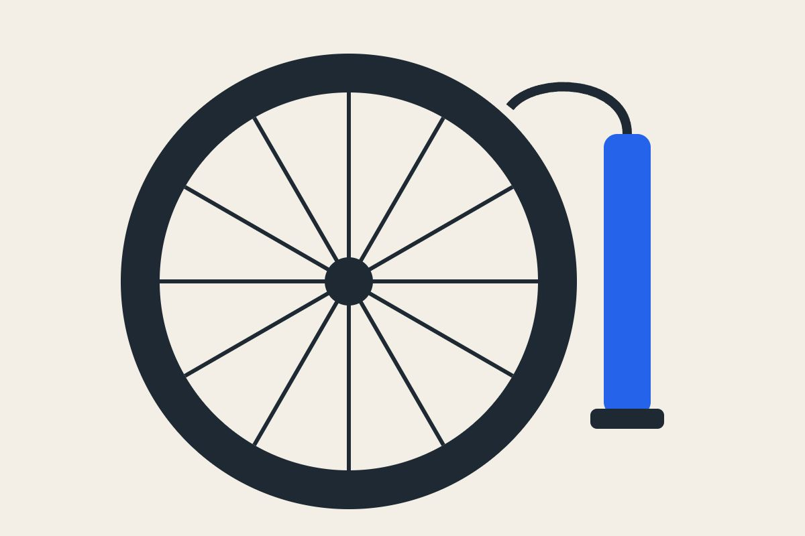

タイヤの空気は、どのくらいで入れる？

タイヤの空気は、乗らなくても少しずつ抜けていきます。2〜3 週間に 1 回を目安に入れてください。
指で確かめる
タイヤを親指で強く押して、少しへこむくらいが目安です。大きくへこむ時は、空気が足りません。
空気が少ないと、パンクしやすい
空気が足りないまま乗ると、段差でチューブがはさまれて、穴があきやすくなります。
パンクの修理は、こちら

タイヤの空気は、乗らなくても少しずつ抜けていきます。2〜3 週間に 1 回を目安に入れてください。
タイヤを親指で強く押して、少しへこむくらいが目安です。大きくへこむ時は、空気が足りません。
空気が足りないまま乗ると、段差でチューブがはさまれて、穴があきやすくなります。
パンクの修理は、こちら